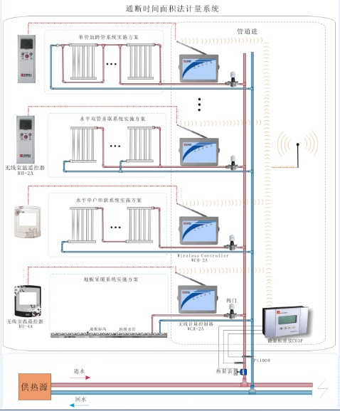

解决方案
解决方案
|

|
通断时间面积法 |
通断时间面积法是通过热费分摊的方式实现分户计量的一种计量方法，简称“时温法”或“SWF” 系统。它集计算机、自 动控制、网络通讯、专利阀门等多门类前沿科技于一体，成功解决了集中供暖建筑的热平衡、热调节，热计量和热收费等 诸多难题。综合考虑了计量供热的系统性和完整性，注重系统用热效率和用热合理性，在提高系统用热效率，实现系统节 能的同时，也为合理计量奠定了良好的基础。同时，通过管理平台对采暖系统运行的各项数据进行实时动态监测，对系统 出现的各种问题做出及时响应，为管理人员进行系统维护提供依据。此方法是现代科技成功应用于传统产业的又一次重大 突破，是国家行业标准《供热计量技术规程》中指定的一种分户热计量方法。
其具体做法是，对于接户分环的水平式供暖系统，在各户的分支支路上安装室温通断控制阀，对该用户的循环水进行 通断控制来实现该户的室温调节。同时在各户的代表房间里放置室温控制器，用于测量室内温度和供用户设定温度，并将 这两个温度值传输给室温通断控制阀。室温通断控制阀根据实测室温与设定值之差，确定在一个控制周期内通断阀的可停 比，并按照这一可停比控制通断调节阀的通断，以此调节送入室内热量，同时记录和统计各户通断控制阀的接通时间，按 照各户的累计接通时间结合供暖面积分摊整栋建筑的热量。
通断时间面积法是将计量系统中的关键要素－－“温度”和“流量”的关系转化为“用热时间”引入到热分摊技术中。通过控 制室内温度和流量，结合用户的采暖时间和住房面积，利用热介质的温差及供热系统中的流量比例相对温度的条件，在满 足室温舒适度的前提下，以通水时间为依据，对楼栋计量表的总热量值进行按户分摊。
对于分户水平连接的室内采暖系统，在各户的分支支路上安装室温通断控制器，对该用户散热器的循环水进行通断控 制来实现该户的室温控制。同时在各户的代表房间里放置室温遥控器，用于测量室内温度和供用户设定温度，并将这两个 温度以无线方式发送给室温通断控制器。室温通断控制器根据实测室温与设定值之差，确定在一个控制周期内通断阀的开 停比，并按照这一开停比控制通断调节阀的通断，以此调节送入室内热量，同时记录和统计各户通断控制阀的接通时间， 按照各户的累计接通时间并结合采暖面积分摊整栋建筑的热量。
（1）工程布线方便、简单：楼栋分摊器与通断控制器之间通讯支持485总线和M-BUS总线。通断控制器与室内控制器之 间支持485总线和无线433M通讯。楼栋分摊器与中间件服务器之间支持GPRS/CDMA/LAN多种网络通讯方式。
（2）安全稳定、负载能力强：系统采用三层客户/服务器设计架构，支持5W台楼栋分摊器同时在线并正常工作。
（3）供回水温度修正：采用供回水温度修正算法提高热分摊的可靠性和适用性，避免水力失调、系统堵塞、热用户改动 室内散热器容量或类型等原因造成的分摊误差。
（4） 热量分摊：分摊一次热用户采暖耗热量、并在用户端（室内温控器和通断控制器）液晶显示屏上显示采暖耗热量， 便于热用户了解采暖热耗状况，避免收费纠纷。
（5） 远程管理：系统具有远程集抄、通断阀远程控制、供热工况智能分析和故障报警等功能，并自动储存历史数据，提 高供热部门的管理效率，并及时发现和处理热计量系统的故障或人为破坏，确保热计量系统运行可靠，热计量数据准 确。
（6） 用户室温实时监测：数据中心同时采集热用户室内的采暖累积积分平均温度和即时温度，便于供热企业了解热用户 的实际采暖状态。
（7） 产品可靠：通断控制器寿命10万次以上，耐压1.0MPa，耐温95℃，防水结构设计，使用寿命长，无水质要求，散热 器系统及地暖系统均适用。
（8） 热计量与温控一体化：同时实现热计量及室内采暖温度控制，无须安装散热器恒温阀，用户可方便设定室内采暖温 度,室内控制器液晶屏显示采暖状态和采暖热耗，便于热用户采暖节能控制。
（9）实时故障监控：供暖监控管理软件可以实时监控到设备故障，并快速定位设备位置和故障原因。
（10）人性化设计：小区住户可以使用绑定手机发送短信控制室内温度；小区住户可以使用IE浏览器登录住户查询系统查 询住户采暖信息以及住户的余额；小区住户可以根据需要定时开关供暖系统。
 京公网安备 11010802033138号|京ICP备12010723号
京公网安备 11010802033138号|京ICP备12010723号